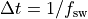

nmrespy.mpm¶
Computation of signal estimates using the Matrix Pencil Method.
- class nmrespy.mpm.MatrixPencil(data, sw, offset=None, sfo=None, M=0, fprint=True, start_point=0)[source]¶
Class for performing the Matrix Pencil Method with the option of model order selection using the Minimum Description Length (MDL) 1. Supports analysis of one-dimensional 2 3 or two-dimensional data 4 5
- Parameters
data (numpy.ndarray) – Signal to be considered (unnormalised).
sw ([float] or [float, float]) – The experiment sweep width in each dimension in Hz.
offset ([float], [float, float] or None, default: None) – The experiment transmitter offset frequency in Hz.
sfo ([float], [float, float] or None, default: None) – The experiment transmitter frequency in each dimension in MHz. This is not necessary, however if it set it None, no conversion from Hz to ppm will be possible!
M (int, default: 0) – The number of oscillators. If 0, the number of oscilators will be estimated using the MDL.
fprint (bool, default: True) – Flag specifiying whether to print infomation to the terminal as the method runs.
start_point (int, default: 0) – The first timepoint sampled, in units of 
References
- 1
M. Wax, T. Kailath, Detection of signals by information theoretic criteria, IEEE Transactions on Acoustics, Speech, and Signal Processing 33 (2) (1985) 387–392.
- 2
Yingbo Hua and Tapan K Sarkar. “Matrix pencil method for estimating parameters of exponentially damped/undamped sinusoids in noise”. In: IEEE Trans. Acoust., Speech, Signal Process. 38.5 (1990), pp. 814–824.
- 3
Yung-Ya Lin et al. “A novel detection–estimation scheme for noisy NMR signals: applications to delayed acquisition data”. In: J. Magn. Reson. 128.1 (1997), pp. 30–41.
- 4
Yingbo Hua. “Estimating two-dimensional frequencies by matrix enhancement and matrix pencil”. In: [Proceedings] ICASSP 91: 1991 International Conference on Acoustics, Speech, and Signal Processing. IEEE. 1991, pp. 3073–3076.
- 5
Fang-Jiong Chen et al. “Estimation of two-dimensional frequencies using modified matrix pencil method”. In: IEEE Trans. Signal Process. 55.2 (2007), pp. 718–724.
- __init__(data, sw, offset=None, sfo=None, M=0, fprint=True, start_point=0)[source]¶
Checks validity of inputs, and if valid, calls
_mpm()